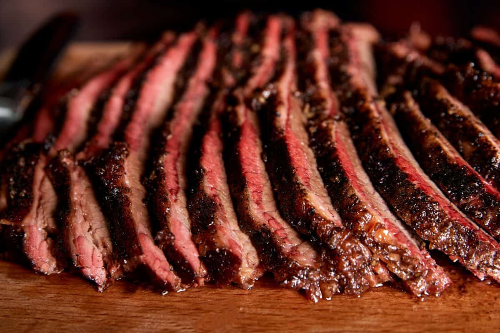
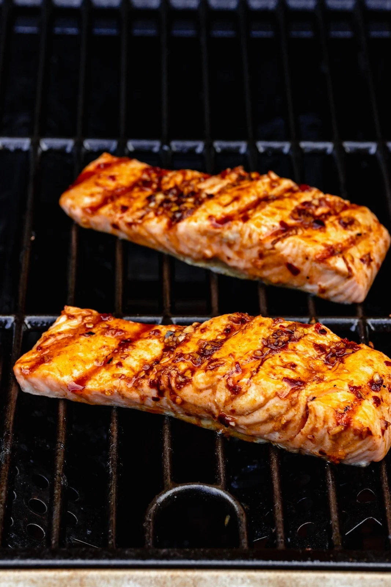

Meat for The Smoker Cow Brisket Top Round Roast Thor's Hammer Pig Bacon Explosion Ribs Pork Belly Game Leg of Lamb Rabbit Gator Tail 
Meat for The Grill Cow Tomahawk Steak Burgers Ribeye Bird Chicken Wings Turkey Leg Chicken Thighs Fish/Seafood Salmon Trout Shrimp 